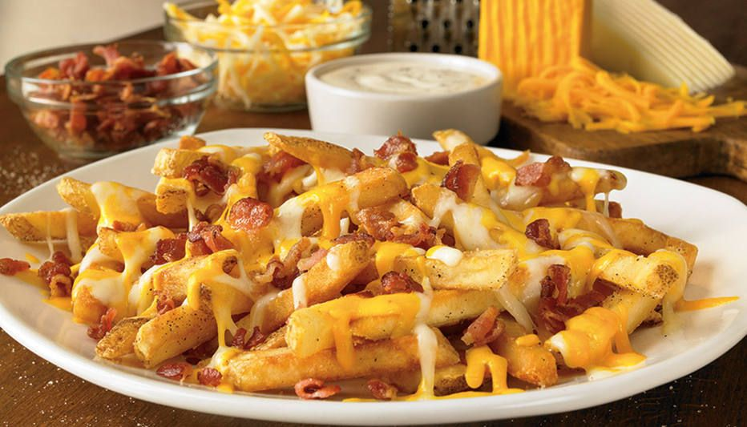

Bacon fries with cheese
Ingredient list
- 400 grams of frozen fries
- 100 grams of cheese
- 200 grams of bacon
Step by Step Cooking
- Fry the fries as usual.
- In a pan with oil, fry the bacon cubes until crispy.
- Melt the cheese in a refractory in the microwave.
- Mix the bacon and cheese.
- Place on top of already fried fries.
- Bake in low temperature oven for 5 minutes.
Ready Dish Pic
